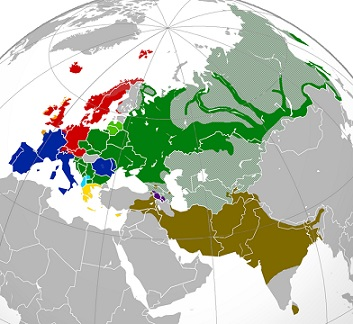

|  |
Hellenic: Greek
Indo-Iranian
Italic
Celtic
Germanic
Armenian
Balto-Slavic: Baltic
Balto-Slavic: Slavic
Albanian
Non Indo-European
|
In our project, we attempt to discover which languages - from a sampling of languages across the Indo-European language family - Google Translate processes most successfully and why in the context of Harry Potter texts.
The Indo-European languages correspond with a myriad of cultures, each heir to inter-related legacies of mythology and folklore. Is Harry Potter, currently available in 67 different languages, modern folklore on a mass scale?
In creating her series, J.K. Rowling derived the characters from ancient literary cannons, Indo-European and beyond. Phoenixes, centaurs, ghouls, and more manifest throughout world history in hundreds of linguistic and cultural forms.
Here, you can explore a sampling of the world's languages according to these universally enchanting entities. To navigate, hover and click on the language families listed in the key above.